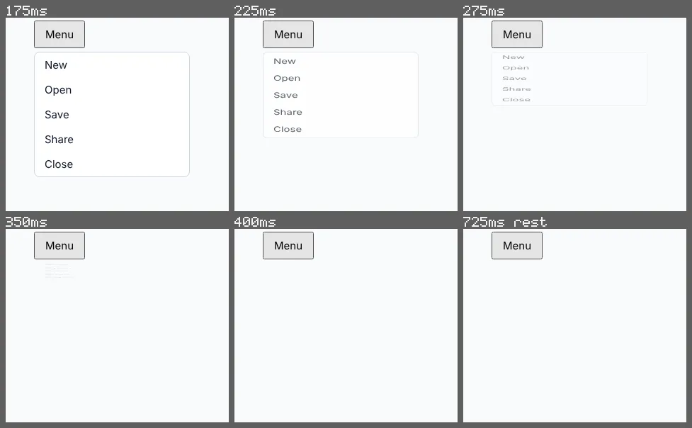

inspect motion --wait
A menu that leaps back open when clicked again
A drop-down that unfolds and folds with two @keyframes. Opened and closed once, each looks right. The brief also says a click while it is still opening turns it round from where it is.
Open the page under test · fixtures/motion-authoring/v2/mutants/menu-keyframes.html
Run it
vlmkit inspect motion fixtures/motion-authoring/v2/mutants/menu-keyframes.html --click .menu-button --wait 125 --click .menu-button --selector .menu --exits --frames {out}/f
vlmkit snapshot strip --manifest {out}/f/frames.json --max-frames 6 --columns 3 --crop 0,36,315,273 --out {out}/strip.png
inspect motion shot. At 175ms the menu is fully open again, though it was half open when the click landed.What to look at
--wait 125 lets the second click land half way through the opening. The menu is 133px tall at opacity 0.75 at that moment and 177px at 1.00 one frame later: the close starts from its own first keyframe, fully open, and the jump is reported as interrupt-jump.
The fix
Use one transition on transform and opacity between the closed and the .open state. A transition reverses from where it is; a @keyframes animation always starts from its from.
What vlmkit printed
vlmkit inspect motion fixtures/motion-authoring/v2/mutants/menu-keyframes.html --click .menu-button --wait 125 --click .menu-button --selector .menu --exits --frames {out}/f · exit 1 — the command fails, as a gate in CI would
inspect motion: fixtures/motion-authoring/v2/mutants/menu-keyframes.html — 11 frames over 175..425ms + 1 at rest (<out>/f/frames.json)
sampled: the motion --click .menu-button (the last action) starts; what --click .menu-button started ran (as far as --wait let it) unsampled — --every-action measures each in turn
target ".menu", begins at 175ms, runs 250ms: travels 88px upwards over the frames measured (its centre: its box shrinks 166px from its top edge, which stays put at y = 84), follows ease-out exactly in its path, its opacity and its scale (measured: no other curve comes close); the scale shrinks towards its top edge (its scale goes from 1.00 to 0.00)
frames (time, share of its on-screen part seen [op = opacity, on-screen = share of its box in the viewport, when partial], centre): 175ms 1.00 (150,173), 200ms 1.00 op 0.84 (150,158), 225ms 1.00 op 0.69 (150,145), 250ms 1.00 op 0.55 (150,133), 275ms 1.00 op 0.43 (150,122), 300ms 1.00 op 0.32 (150,112), 325ms 1.00 op 0.21 (150,103), 350ms 1.00 op 0.13 (150,95), 375ms 1.00 op 0.06 (150,90), 400ms 0.00 ·, 424ms 0.00 ·, 725ms 0.00 ·
FAIL interrupt-jump: .menu jumps the moment --click .menu-button lands at 158ms: 220x133 at opacity 0.75 → 220x177 at 1.00 within a frame, more than it moves in any frame after (28px). Its new motion starts from its own first keyframe, not from where the one it cut into had got to: a @keyframes animation always starts from its `from`, a transition reverses from where it is — move the two states into one transition
1 fail; measured from the page, no model asked (--jev adds Jev's reading and the --forbid statements)
look at the frames: vlmkit snapshot strip --manifest <out>/f/frames.json --max-frames 6 --columns 3 --crop 0,36,315,273 --out <out>/f/strip.png
report: <out>/f/motion-report.json
vlmkit snapshot strip --manifest {out}/f/frames.json --max-frames 6 --columns 3 --crop 0,36,315,273 --out {out}/strip.png · exit 0
Strip Frames: 6 (2 row(s) x 3 column(s)) Sheet: 977x604 png <out>/strip.png